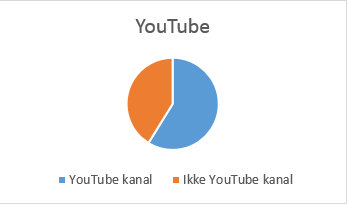

Flere på YouTube
Der er en voksende vækst på YouTube. Youtuberne har fundet ud af, at de kan leve af deres ”hobby”. Så der er mange, der drømmer om at blive genkendt på gaderne.
Nye målinger viser, at 7 ud af 17 personer ikke har en YouTube kanal.

Splay
De største stjerner i Danmark er med i en virksomhed kaldet Splay. Splay har et hoved-kontor inde i København, hvor de laver fælles colabs med dem, der er med i Splay. Splay har også sin egen YouTube kanal, hvor de laver serier osv.
Guldtuben
Splay har også lavet et show, der hedder Guldtuben. Guldtuben er et show, hvor de kårer de forskellige youtubere inden for hver deres kategori. Der er 9 kategorier i Guldtuben, hvor youtuberne kan vinde. Det er fansene der bestemmer, nomineringerne og vin-derne bliver kåret en gang om året.
Unge bruger meget tid og mange penge
Det er bevist af forskere, at unge bruger alt imellem 5 minutter til 3½ time på det sociale medie YouTube. Det er dog ikke kun unge/børn, der laver og ser YouTube. Det er også voksne, der ser YouTube, og nogen laver også YouTube videoer. Youtuberne laver deres egen merchandise, som de sælger til deres trofaste fans.
Der kan også være en sponsor, som har/vil sponsorere en YouTube video til deres Youtubernes kanal. Man ser for eksempel unge piger anmelde og anbefale make-up, tøj, sko og tasker, hvilket de tjener ganske godt på!
”Jeg startede, fordi jeg syntes det var sjovt. Og jeg ville give noget tilbage, efter alle de youtubere og YouTube videoer jeg har set.
Min yndlings youtuber ehm…, jeg har man-ge. Jeg har både danske og Engelske. Min danske er Gexpgaming, og min engelske er Lathlan. Der er desværre mange dansk You-Tubere der er stoppet, som jeg synes var go-de.
Jeg har en del idoler, fx Gexpgaming som jeg også har sagt tidligere. Jeg har bare altid be-undret ham, fordi han uploadede hver dag og nogen gange mere. Jeg er også selv begyndt at lave videoer næsten hver dag og jeg lægger dem også på YouTube,” siger Nicklas Munk, fra Youtube kanalen NicklasPlzAim.